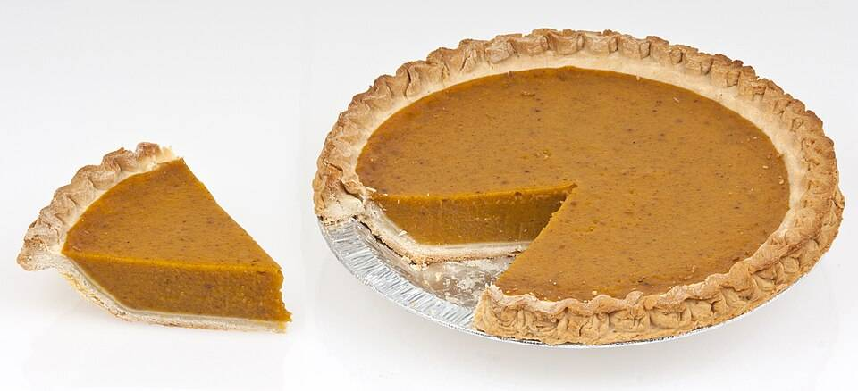
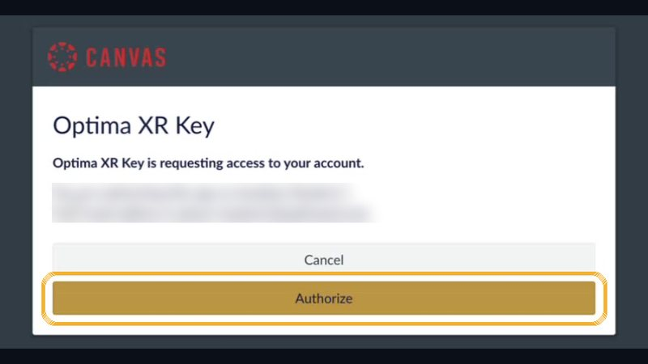

| Where | A restaurant |
| Guide | Opti |


Pie Night
Type each gray word in Filter models. Put out the number shown. Skip any that say “or Equal.”
🥧 Pie slices (drawn models)
🔣 Signs (drawn models)
This list is also in VR: open your menu, click the Canvas tab, then pick our assignment.
Open the On-Demand app. Click Explore. Type Sydney in Filter environments. Click Optima Sydney Restaurant, then Begin Solo.
Find a table. Open your menu (the top button on your right controller) and click Models.
Pair 1: make a 2 eighths pie and a 4 eighths pie.
Pair 2: below them, make a 2 fifths pie and a 2 twelfths pie.
Put the right sign between each pair.
Stand back so both pairs fit. Open your menu, click Library, then Camera. Click Take photo.
Click the Canvas tab and pick 3.09.04 VR · Pie Night. Click Choose from My Files, pick your photo, click Use this file, then Submit to Canvas. Look for the green Submitted tag.
Press the Meta button, then click Quit. Check the Canvas assignment for your photo. Not there? Open Having trouble in VR?
🛟 Having trouble in VR?Steps with pictures, and a how-to video
These pictures come from other maps. Your map will be Optima Sydney Restaurant, but the buttons are the same.
🖥️ First time only: connect Canvas (on your computer)

Go to xr.optimaed.com. Log in with your VR login.

Click Connect to Canvas. Log in to Canvas, then click Authorize. You will see Canvas connection completed.

Click Canvas on the left and pick our class. You only do this one time.
📄 Only if the assignment has a file

Open the assignment. Click Open in Canvas to download the file. Then click My Files and Upload File.
🥽 In the headset

Click Explore. Type the map name in Filter environments.

Click the map, then click Begin Solo.

Press the top button on your right controller. Click the Canvas tab and pick our assignment. Tip: point at a mint side grip and squeeze to pull the tablet to your hand.

Click Models. Type the gray word in the search box. Click a model to bring it out.

Grab a model with the palm trigger. Use both palm triggers to make it bigger or smaller.

Click Library, then Files. Pick your file to place it.

Click Library, then Camera. Move the tablet until your build fits. Click Take photo.

Click the Canvas tab and pick our assignment. Click Choose from My Files, pick your newest photo, then Use this file.

Click Submit to Canvas. Look for the green Submitted tag. To leave, press the Meta button, then click Quit.
🔁 Didn’t work in VR? Two other ways

Go to xr.optimaed.com and click Canvas. Pick our assignment, click Choose from My Files, pick your photo and submit it.
Your photos save to My Files at xr.optimaed.com. You can also download your photo there and upload it to the Canvas assignment yourself.
Build the pies
Pie Night Table